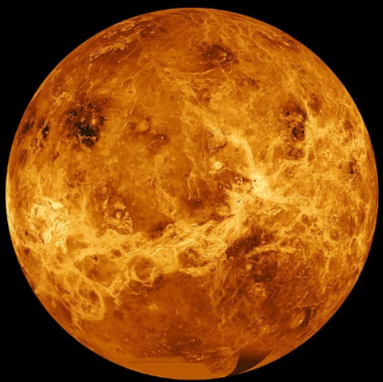

Venus
A continuacion de Mercurio encontramos a Venus. Es el que mas se parece a la Tierra Está cubierto de nubes muy esperas que reflejan la luz solar, de modo que por la noche se ve brillante y podemos distinguirlo a simple vista.
Su nombre es en honor a Venus, diosa romana del amor.
